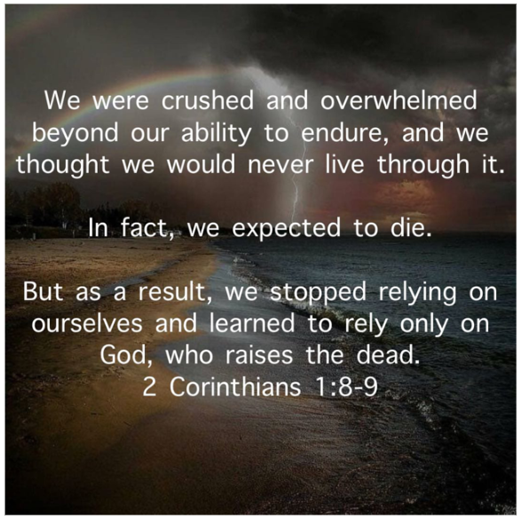

Blessed day before Sabbath — blessed two days before the Lord's Day! How are you all doing? I'm still just okay. I wonder sometimes where “okay” fits into the abundant life Christ promised me.
I've had a hard time putting this into words, but I want to try. I had a really tough childhood — enough that I should probably document it for my kids someday — and through all of it I never once thought about ending my life. Not before I became a Christian, not after. But it wasn't long after my brain tumor that the thought showed up, uninvited, and I almost made it make sense in my head. It seemed, in the moment, like it might actually be a better solution for everyone. I'd pray, “Father, what good is my life now? I sleep so much because life is so hard — how is that any different from being dead? What value do I even add to my wife, my kids, my community, Your Kingdom anymore?”
Before my surgery I actually prayed that the Lord would take my life during it — the odds were already close to 70% I wouldn't make it anyway. When I woke up, I wasn't dead, and I remember thinking, is this another one of my prayers You're not answering? Lying in the hospital for a month, and then at home, I kept asking myself how I could know God wanted me to live. My first answer was weak — because He didn't let me die in surgery. Eventually I settled somewhere sturdier: if I wake up in the morning with breath still in my lungs (His breath is life — Gen 1:7), that's confirmation enough that it's His will for me to keep living, independent of my circumstances. I'm still settled on that.
All of this came back to me in my Quiet Time yesterday morning, reading 2 Corinthians. I'd read these verses many times before, even memorized them in college, but the Spirit pressed them on me differently this time — less like reading, more like being drawn into them:
“We were crushed and overwhelmed beyond our ability to endure, and we thought we would never live through it. In fact, we expected to die. But as a result, we stopped relying on ourselves and learned to rely only on God, who raises the dead.” — 2 Corinthians 1:8–9

Isn't that basically a summary of my life? My brain tumor crushed and overwhelmed me beyond any of my own ability to endure it. So did being four years old when my Dad threw my Mom out my bedroom window. So did being ten when he burned the house down. So did my stepdad stealing all my college fund and leaving my Mom on my first day of school, or the Wells Fargo VP calling to yell at me over a bounced registration check and threatening to have me dragged out of class. All bad — extremely bad — but I endured those. They weren't beyond my ability, or God stepped in and strengthened me in ways I didn't even recognize at the time. But my current circumstances are different. I can say honestly they're not just overwhelming and crushing — they're genuinely beyond my own ability to endure.
Is there an innocent-sounding heresy floating around the church that says, “God will never give you more than you can handle”? I'm half-convinced Judas Iscariot started it. I think people take 1 Corinthians 10:13 — “God is faithful. He will not allow the temptation to be more than you can stand” — and stretch it past what it says. The very next clause qualifies it: “He will provide a way of escape so that you can endure it.” So either the popular version is heresy outright, or it needs the honest amendment: God will absolutely give you more than you can handle on your own, but He'll provide the way through it so that you endure.
Either way, here's where I've landed: I stopped relying on myself and learned to rely on God, who raises the dead — which, one way or another, I will be soon enough. Let's all just go with that.
I'll admit that even though I'm anxiously awaiting Exile & Return, the old dread and foreboding are creeping back in. I'm going to show up for our first meeting — maybe the first few — and see how I do. If I go unstable again, I'll just retreat back to my AI world, where I still fit in.
Comments